Эдинбург | Dun Eideann (на гаэльском)
Афины Севера
Девиз: Nisi Dominus Frustra (Без Господа всё напрасно) "Цветок Шотландии" - неофициальный гимн Шотландии и Эдинбурга
Текст гимна:
O Flower of Scotland
When will we see
Your like again,
That fought and died for
Your wee bit hill and glen
And stood against him
Proud Edward's army,
And sent him homeward
Tae think again.
The hills are bare now
And autumn leaves lie thick and still
O'er land that is lost now
Which those so dearly held
That stood against him
Proud Edward's army
And sent him homeward
Tae think again.
Those days are past now
And in the past, they must remain
But we can still rise now
And be the nation again
That stood against him
Proud Edward's army
And sent him homeward,
Tae think again.
O Flower of Scotland
When will we see
Your like again,
That fought and died for
Your wee bit hill and glen
And stood against him
Proud Edward's army,
And sent him homeward
Tae think again.

Эдинбург, столица Шотландии, седьмой по величине город Великобритании, второй в Шотландии. Но неповторимая красота города, его история и дух - главные причины почему город до сих пор является горячим местом для путешествия, не только для интернациональных туристов, но и для жителей королевста.
Город расположен на берегу залива Ферт-оф-Форт, но климат, не смотря на высокую северную широту и близость Северного моря, достаточно мягкий: температура редко опускается ниже нуля зимой и редко поднимается выше пятнадцать градусов, но ливни в городе бывают часто. Рельеф немного неровен, из-за отрогов Пентладских холмов. Старый и Новый город разделены небольшой низиной, оставшейся после осушения искусственного озера Нор-Лох; сейчас там распаложен парк Сады Принцесс-стрит.
Из покон веков город был расположен на стратегически важном месте: побережье (и морские пути соответственно) находится близко к Замковой скале, точки контроля близлежащих торговых дорог спускающихся с Шотландского нагорья к Лоуленду. Неудивительно, что на месте города когда-то была военная стоянка римлян. В седьмом веке на этом месте жил знатный бриттский род Эдинов, которые и построили замок на скале. В двенадцатом веке король Давид Первый даровал Эдинбургу статус города, когда туда переехал королевский двор, и была построена первая церковь, но столицей де-юре всё равно оставался древний Скун. Лишь в пятнадцатом веке, по указу Якова Второго Стюарта, Эдинбург стал столицей Шотландии, не только с административной точки зрения, но и с точки зрения культуры и науки. Даже когда королевский двор был перенесён Яковом Шестым Стюартом в Лондон, столицу Великобритании, и, позже, когда Парламент Шотландии был упразднён, город всё равно остался центром всей Шотландии, и крайне важным городом всей Империи. Сейчас Эдинбург - один из наиболее процветающих городов всей Великобритании, особенно после того как Парламент был восстановлен.
Официальный сайт города - https://edinburgh.org
Официальный сайт городского совета - https://www.edinburgh.gov.uk
Туристический сайт города https://www.visitscotland.com
Сайт Эдинбургского замка https://www.edinburghcastle.scot
Сайт фестивалей города https://www.edinburghfestivalcity.com
Галерея карт города
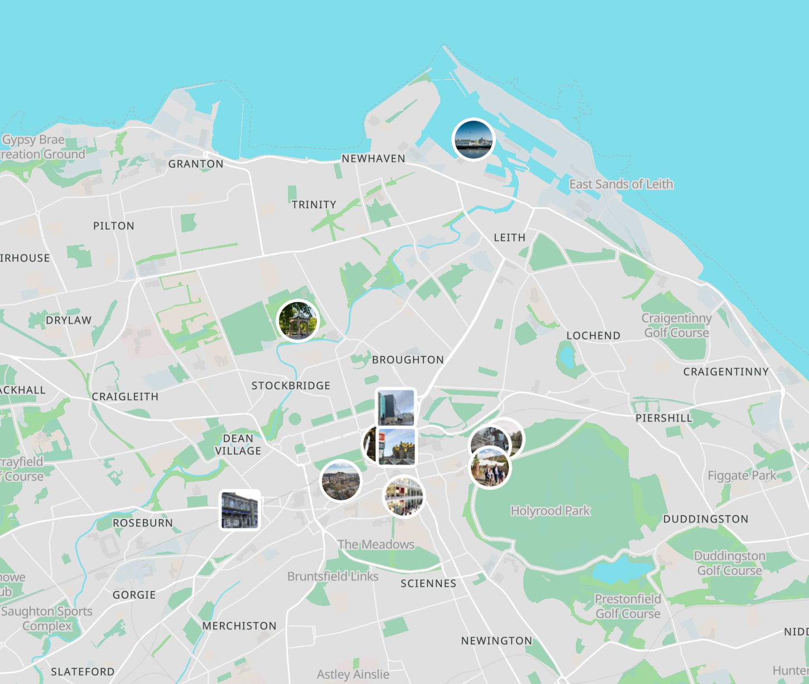
Карта районов города
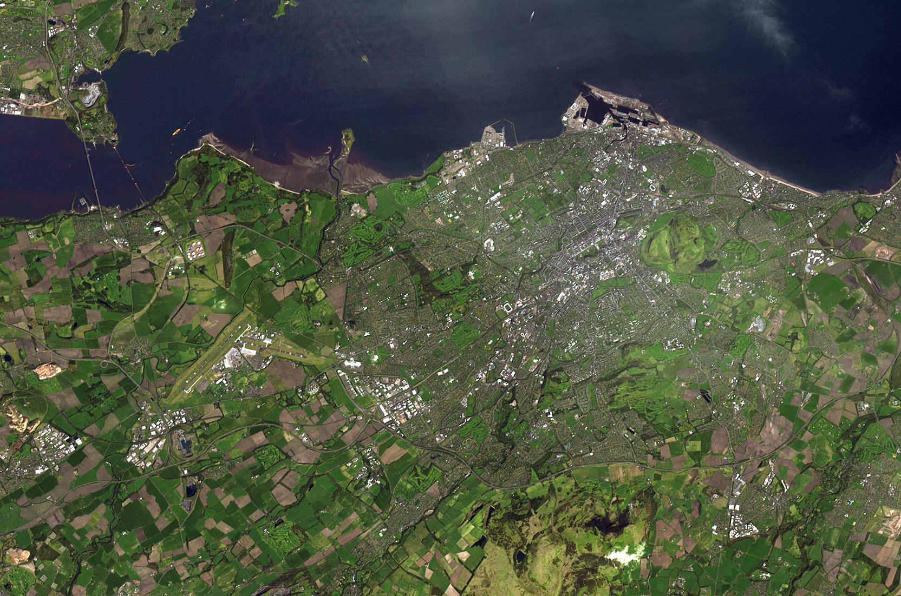
Вид на город со спутника
Галерея красивых фото города
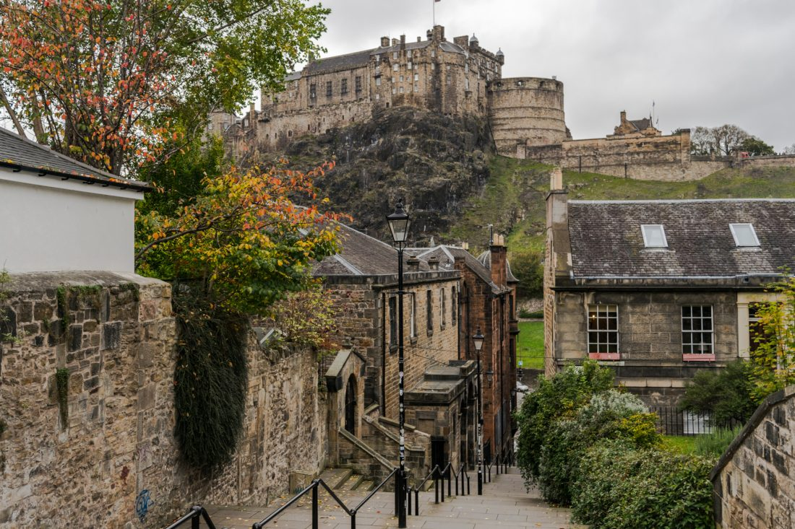
Вид на Эдинбургский замок
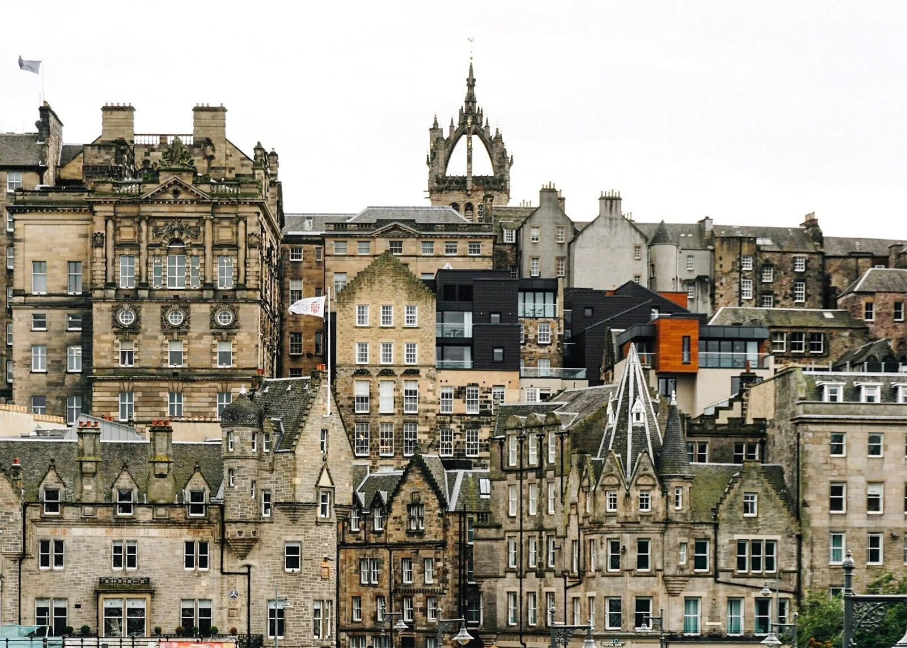
Вид на Старый город
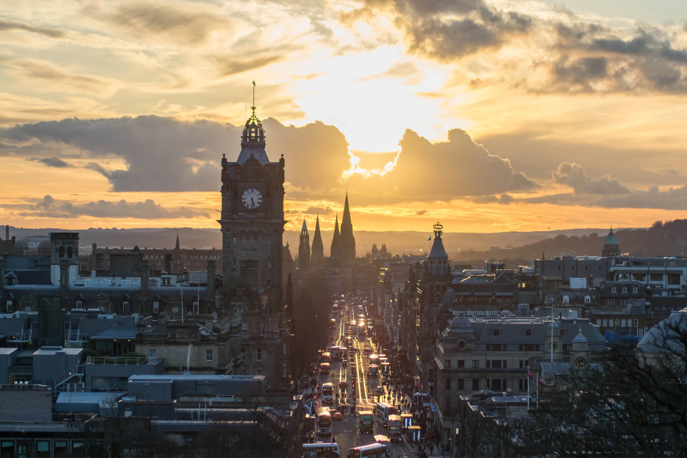
Вид на Королевскую Милю
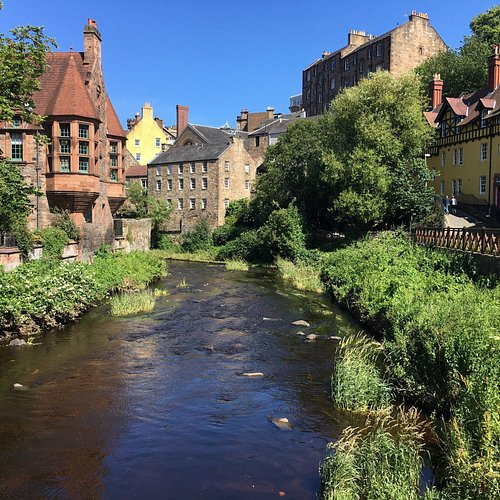
Вид на одну из главных рек города, Уотер-оф-Лейт
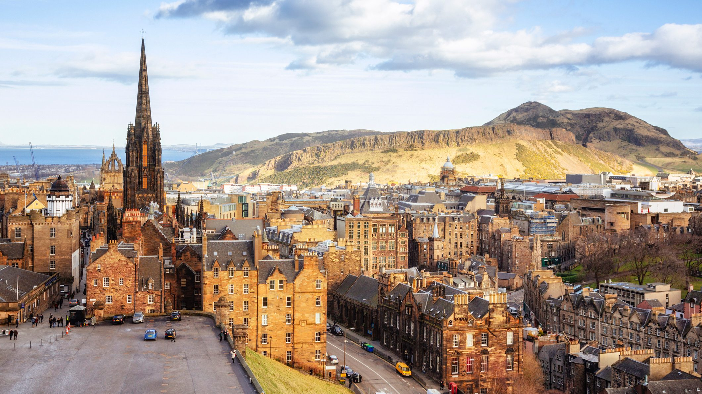
Вид на Трон Артура из города
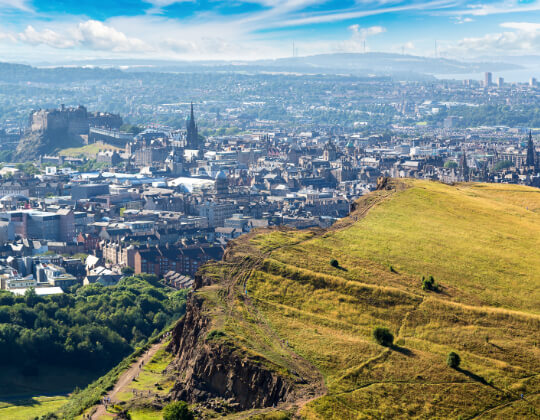
Вид на город с Трона Артура
Основные достопримечательности города
| Достопримечательность | Фото | Описание |
|---|---|---|
| Эдинбургский Замок |  |
Древняя крепость на Замковой скале в самом центре города. Главная достопроимечательность города. |
| Старый Город | 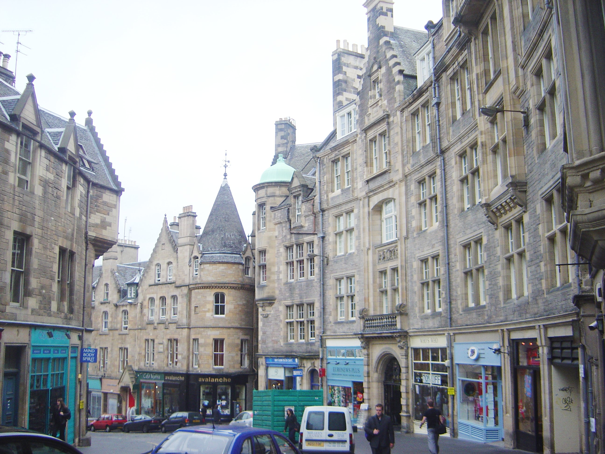 |
Часть историческго центра города, который выполнен в основном в стиле классицизма, но там также сохранилось множество более старых построек. |
| Новый Город | 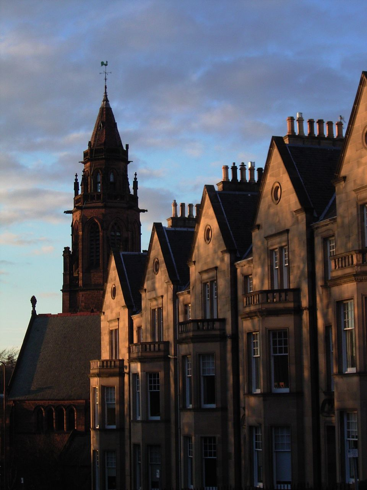 |
Историческая часть города построенная при расширении города Яковом Шестым Стюартом. Выполнен, в основном, в стиле неоклассицизма. |
| Королевская Миля | 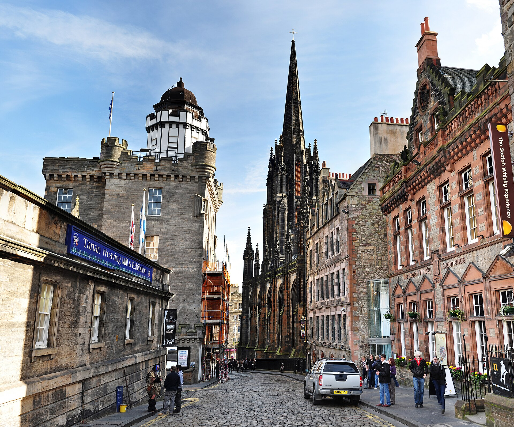 |
Череда улиц, протяженностью 1,8 км (одна шотландская миля), ведущих от Эдинбургского замка к Холирудскому дворцу, официальной королевской резиденции Эдинбурга. |
| Трон Артура | 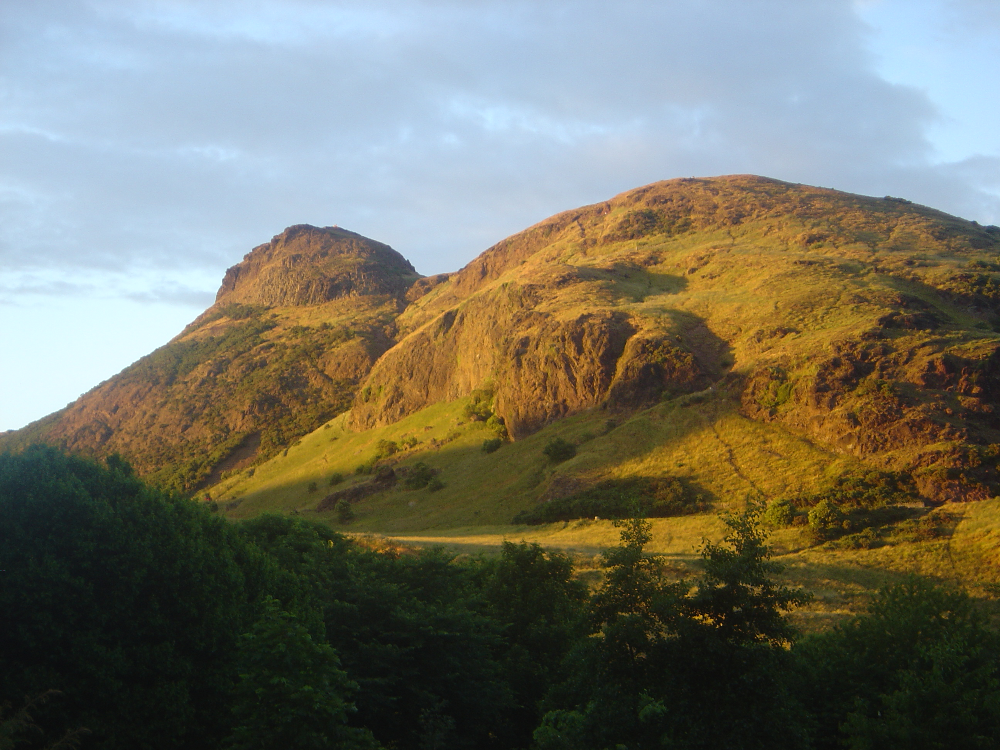 |
Как и Замковая скала, потухший вулкан, находящийся в центре города. С пика Трона Артура, на который можно подняться, открывается великолепный вид на город. |
| Калтон-Хилл | 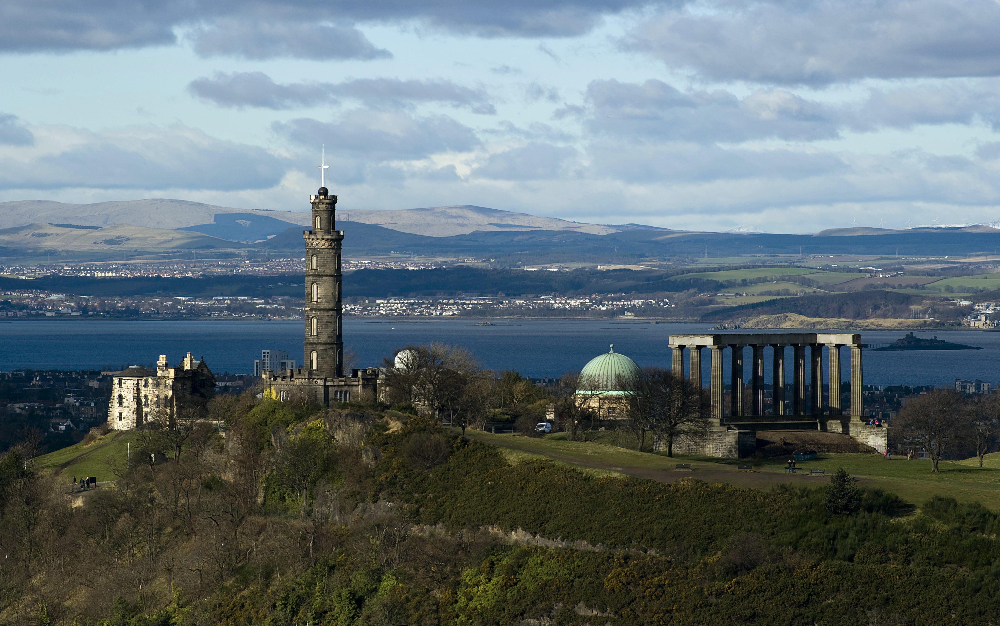 |
Также крайне важный холм для города: у подножья расположены Холирудский дворец и здание Парламента; на склоне - секретариат Кабинета министров, а на вершине - многочисленные памятники, монументы и Городская обсерватория. |
Ссылки на наши другие проекты:
Сайти о специальности: "О моей специальности"
Сайти о тегах html: "Таблица о тегах"